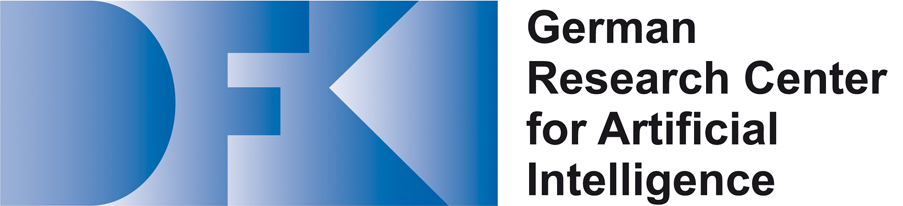

    <div style="background-color: white;">
        <!-- <div class="col-lg-1"></div> -->
        <!-- <div class="col-lg-10"> -->
            <div class="prefooter-logos">
                
                
                
                
                
            </div>      
        </div>
        <!-- <div class="col-lg-1"></div> -->
    </div>


<footer>
    <div class="container">
        <ul class="list-inline">
            {% include nav-list.html %}
        </ul>
        <p class="copyright">&copy; 2020 Augmented Humans International Conference<a href="http://kirillragozin.com" style="opacity: 0.5;">.</a></p>
    </div>
</footer>
